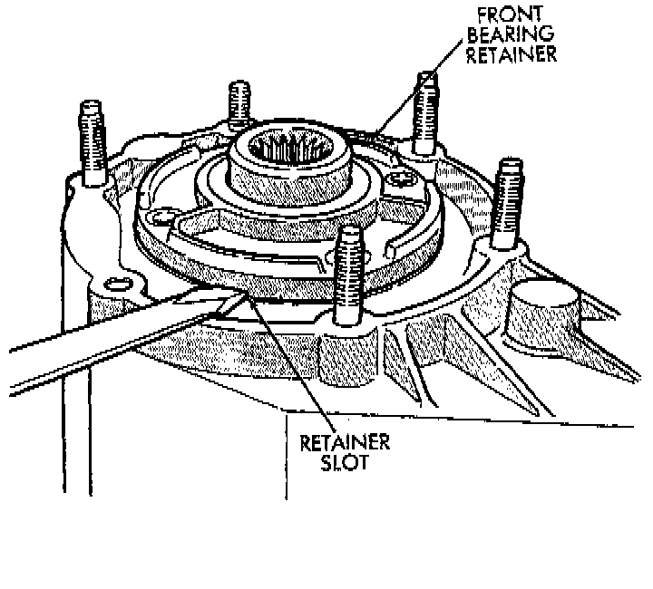
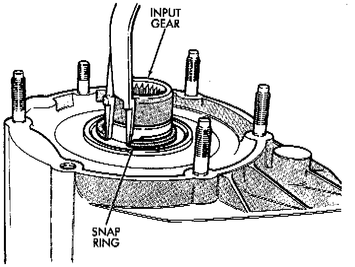
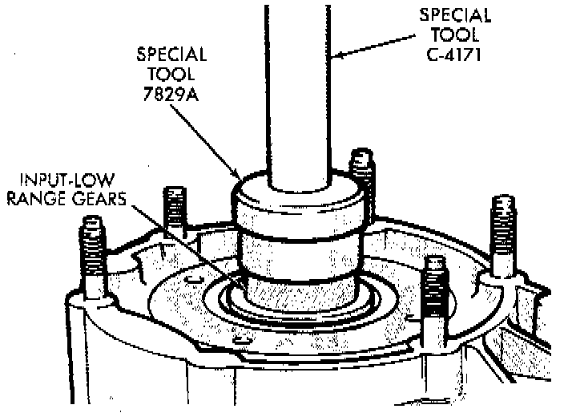
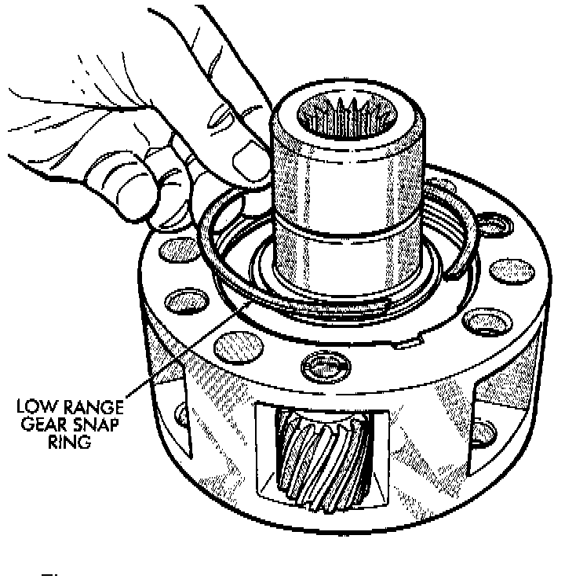
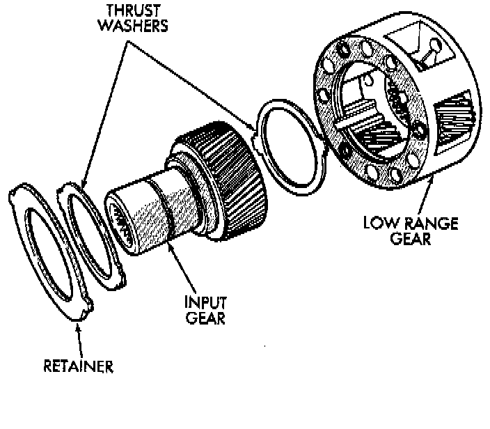
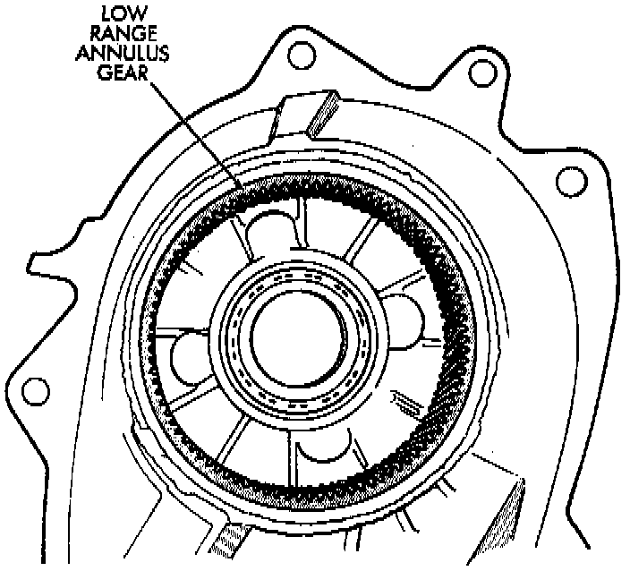

Input Gear/Low Range Assembly Removal and Disassembly
1. Remove front bearing retainer bolts.
2. Remove front bearing retainer. Carefully pry retainer loose with screwdriver. Position screwdriver in slots cast into retainer.

3. Remove input gear snap-ring.

4. Remove input/low range gear assembly from bearing with Tool Handle C-4171 and Tool 7829A, or equivalents.

5. Remove low range gear snap-ring.

6. Remove input gear retainer, thrust washers and input gear from low range gear.

7. Inspect low range annulus gear. Gear is not a serviceable component. If damaged, replace gear and front case as assembly.
8. Remove oil seals from following components:
- Front bearing retainer.
- Rear retainer.
- Oil pump.
- Case halves.